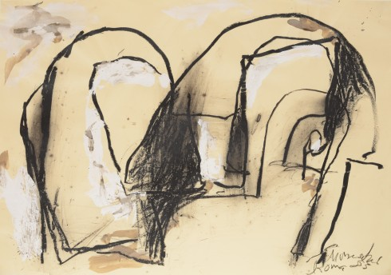

EMIL SCHUMACHER
ROMA - EINE HOMMAGE AN ITALIEN
Bereits seit den 1950er-Jahren bestand eine enge Verbindung Schumachers mit Italien. Mit Künstlern wie Alberto Burri, Lucio Fontana oder Emilio Vedova war dort eine eigene bedeutende Szene informeller Kunst entstanden. Auch das Interesse am Werk Schumachers war groß und führte zu regelmäßigen Einla-
ROMA - EINE HOMMAGE AN ITALIEN
dungen nach Mailand, Florenz, Venedig und nicht zuletzt nach Rom, wo er noch 1996 eine große Mosaikwand schuf. Die in Italien und vor allem in Rom geschaf-
fenen Werke werden erstmals als eige-
ner Werkkomplex präsentiert.
Zur Ausstellung erscheint ein Katalog im Verlag Kettler, Dortmund, herausgege-
ben von Ulrich Schumacher und Rouven Lotz, mit einem Vorwort von Ulrich Schu-
macher sowie einem Beitrag von Heinz Spielmann. 80 Seiten mit ca. 50 Abbil-
dungen, bibliophiler Leineneinband mit Prägung, ISBN: 978-3-86206-738-1,
€ 19,90 im Museum (€ 24,90 im Buch-
handel).

Emil Schumacher Roma- Eine Hommage an Italien Bis 7. November 2021
Emil Schumacher Roma- Eine Hommage an Italien Bis 7. November 2021